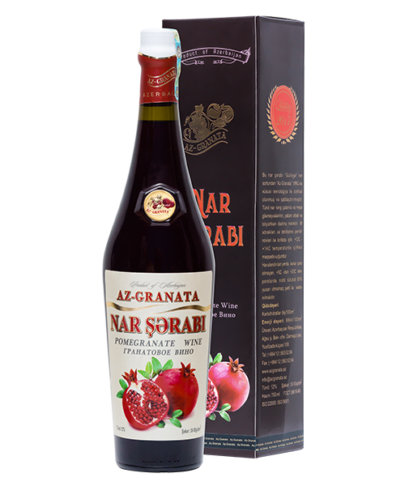
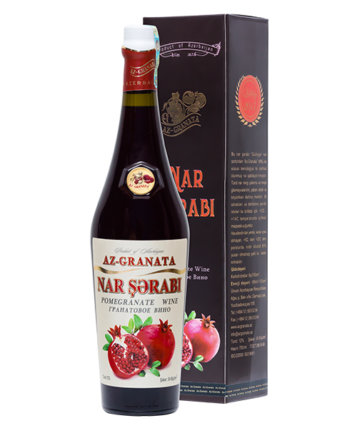

wine details
“Ağsu” nar şərabı eyni adlı rayonda yetişdirilən “Gülövşə” nar sortundan istehsal edilir. Bu şərab tam dəymiş narın emalından alınan şirənin xüsusi texnologiya ilə fermentləşdirilməsi və 3 ay palıd çəlləklərdə saxlanılması yolu ilə hazırlanır. Nar meyvəsində olan faydalı maddələrin şərabda qorunub saxlanmasına imkan verən texnologiyanın tətbiqi onu müalicəvi və pəhriz xüsusiyyətli içkiyə çevirir. Könül oxşayan qırmızı rəngi və narın meyxoşluğunu damla-damla hiss etdirməsi ilə seçilən bu şərab növü şirin desertlər və meyvələrlə gözəl uyğunluq təşkil edir.